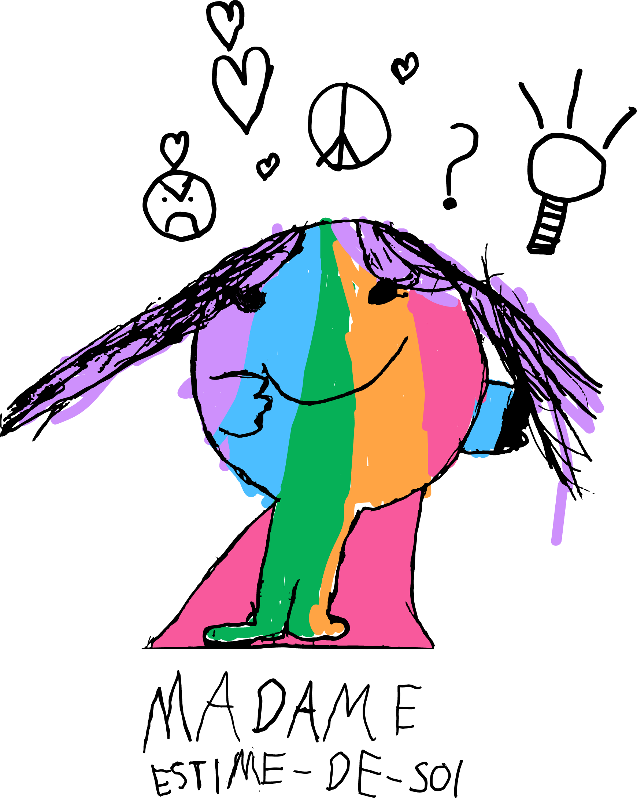

Madame Estime-de-soi est multicolore et porte une robe fushia. Ses cheveux sont longs et détachés parce qu’elle aime jouer.
Madame Estime-de-soi aime qui elle est. Elle est capable de nommer ses qualités et ses difficultés. Elle sait qu’elle peut compter sur les autres Monsieurs, Madames pour régler les injustices. Elle est bonne gagnante et perdante.